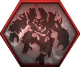
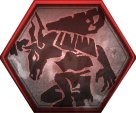
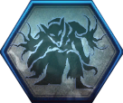
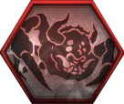
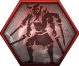
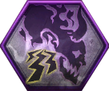
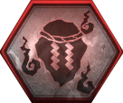

Base Game Soul Core Attribute Table
| Yokai Soul Core | Soul Core Type | Special Effects | Base Rank 1-4 | Rank 9 | Rank 20 | Rank 30 | Attunement Cost | Yokai Ability Cost | Transformation Invincibility? (Avoids Grab Attacks) |
|---|---|---|---|---|---|---|---|---|---|
Gaki  |
Brute |
Anima Charge (Dark Realm) | 8.1% | 9.0% | 10.2% | 11.3% | 4 | 3 | No |
| Life Drain (Yokai Ability Hit) | D- | C- | B- | A- | |||||
|
Enki  |
Brute |
Anima Bonus (Damage Taken) | C | B | A | AA | 5 | 5 | Yes |
| Melee Damage vs. Humans | 1.6% | 2.0% | 2.6% | 3.1% | |||||
Yoki  |
Brute |
Anima Bonus (Amrita Absorption) | D | D+ | C | B- | 7 | 6 | Yes |
| Defense (Yokai Shift) | 32 | 40 | 52 | 63 | |||||
Gozuki (Boss)  |
Brute |
Charge Attack Boost | 2.1% | 2.5% | 3.1% | 3.6% | 9 | 8 | Yes |
| Attack (Yokai Shift) | 23 | 30 | 42 | 53 | |||||
|
Mezuki (Boss)  |
Brute |
Pleides (Enemy Killed) | 28.2% | 33.0% | 42.6% | 51.4% | 9 | 8 | No |
| Attack (Yokai Shift) | 24 | 30 | 42 | 53 | |||||
Ippon-Datara  |
Brute |
Yokai Ability Damage (Scorched Enemy) | 16.0% | 20.0% | 26.0% | 31.5% | 7 | 7 | Yes |
| Equipment Drop Rate | 2.7% | 3.5% | 4.7% | 5.3% | |||||
Kappa  |
Feral |
Life Drain (Water Attack) | D- | C- | B- | A- | 4 | 6 | No |
| Block | 5 | 7 | 9 | 11 | |||||
Nurikabe  |
Brute |
Damage Taken | -0.6% | -1.1% | -1.8% | -2.4% | 8 | 2 | Yes |
| Toughness | 3 | 5 | 7 | 9 | |||||
Mujina  |
Phantom |
Copy Enhancement | 53.3% | 66.7% | 86.7% | 105.1% | 4 | - | - |
| Anima Charge (Unscathed) | 3.7% | 4.5% | 5.7% | 9.8% | |||||
Enenra (Boss)  |
Phantom |
Anima | 0.8 | 1.0 | 1.3 | 1.6 | 9 | 6 | Yes |
| Anima Bonus (Scorched Enemy) | C+ | B | A- | A+ | |||||
Nure-Onna  |
Feral |
Poison Resistence | 4.1 | 5.0 | 6.2 | 7.3 | 4 | 4 | No |
| Melee Damage vs. Unscathed Enemy | 1.5% | 2.0% | 2.6% | 3.1 | |||||
Aberrant Soldier  |
Brute |
Efficient Yokai Abilities (All) | 7.3% | 10.0% | 13.6% | 16.9% | 4 | 3 | No |
| Anima Bonus (Timely Guard) | 1.0 | 1.5 | 2.1 | 2.6 | |||||
Toxic Slime  |
Phantom |
Poison Resistence | 4.1 | 5.0 | 6.2 | 7.3 | 5 | 4 | No |
| Poison Accumulation (Enemy) | 8.2% | 10.0% | 13.6% | 16.9% | |||||
Yatsu-no-Kami (Boss)  |
Phantom |
Melee Damage vs. Poisoned Enemy | 15.8% | 17.0% | 19.4% | 21.6% | 10 | 8 | No |
| Anima Charge | 3.4% | 4.0% | 5.2% | 6.3 | |||||
Yamanba  |
Feral |
Movement Speed (Yokai Shift) | 5.1% | 6.0% | 7.2% | 8.3% | 6 | 4 | No |
| Grapple Damage | 3.1% | 4.0% | 5.2% | 6.3 | |||||
One-Eyed Oni  |
Brute |
Strong Attack Damage | 1.6% | 2.0% | 2.6% | 3.1% | 7 | 6 | Yes |
| Break | 3 | 4 | 5 | 6 | |||||
Karasu Tengu  |
Feral |
Anima | 0.7 | 1.0 | 1.3 | 1.6 | 9 | 4 | Yes |
| Anima Bonus (Onmyo Magic Hit) | D | C | B | A | |||||
Waira  |
Phantom |
Melee Damage (Dark Realm) | 2.1% | 2.5% | 3.1% | 3.6% | 8 | 5 | Yes |
| Other Realm Resistence | 1.6 | 2.0 | 2.6 | 3.1 | |||||
Karakasa Umbrella  |
Feral |
Water Resistence | 4.2% | 5.0% | 6.2% | 7.3% | 3 | 4 | Yes |
| Paralysis Accumulation (Enemy) | 8.4% | 10.0% | 12.4% | 14.6% | |||||
Lesser Umi-Bozu  |
Phantom |
Water Damage | 5.2% | 7.0% | 9.4% | 11.6% | 5 | 3 | No |
| Anima Bonus (Enemy Saturated) | C+ | B | A- | A+ | |||||
Skeleton Warrior  |
Phantom |
Anima Bonus (Ranged Weapon Hit) | C | B | A | AA | 6 | 4 | No |
| Auto-Grave Recovery | 10.5% | 15.0% | 21.0% | 26.5% | |||||
Kamaitachi (Boss)  |
Feral |
Quick Attack Damage | 1.0% | 1.2% | 1.4% | 3.2% | 10 | 7 | No |
| Dash Ki Consumption | -1.0% | -1.2% | -1.4% | -3.2% | |||||
Koroka  |
Phantom |
Fire Damage | 5.4% | 7.0% | 9.4% | 11.6% | 7 | 4 | No |
| Stealth | D | C | B | A | |||||
Dweller  |
Feral |
Paralysis Resistence | 4.1 | 5.0 | 6.2 | 7.3 | 5 | 3 | No |
| Anima Bonus (Grapple) | 1.2 | 1.3 | 1.4 | 1.5 | |||||
Rokurokubi  |
Phantom |
Anima Bonus (Scorched Enemy) | C+ | B | A | A+ | 6 | 4 | No |
| Yokai Ability Damage (Poisoned Enemy) | 16.0% | 20.0% | 26.0% | 31.5% | |||||
Onryoki (Boss)  |
Brute |
Anima Bonus (Damage Taken) | C | B | A | AA | 9 | 6 | Yes |
| Damage Taken (Mid-Attack) | -6.5% | -10.0% | -16.0% | -21.5% | |||||
Mitsume Yazura  |
Brute |
Enemy Sensor | null | null | null | null | 7 | 4 | Yes |
| Anima Charge (Critical) | 9.4% | 11.0% | 13.4% | 15.6% | |||||
Biwa Boku-Boku  |
Phantom |
Damage vs. Revenants | 4.1% | 5.0% | 6.2% | 7.3 | 4 | - | - |
| Soul Core Drop Rate | 1.0% | 1.5% | 2.1% | 2.6% | |||||
Tatarimokke (Boss)  |
Phantom |
Yokai Ability Damage (Corrupted Enemy) | 17.0% | 20.0% | 26.0% | 31.5% | 9 | 5 | No |
| Melee Damage (Dark Realm) | 2.2% | 2.5% | 3.1% | 3.6% | |||||
Flying Bolt  |
Phantom |
Anima Bonus (Ranged Weapon Hit) | C | B | A | AA | 6 | 4 | Yes |
| Reduced Movement (Ranged Weapon Hit) | 26.6% | 33.0% | 42.6% | 51.4% | |||||
Namahage  |
Brute |
Melee Damage vs. Zero-Ki Enemy | 5.2% | 6.0% | 7.2% | 8.3% | 7 | 5 | Yes |
| Defense (Yokai Shift) | 32 | 40 | 52 | 63 | |||||
|
Tesso  |
Feral |
Active Skill Ki Damage | 1.0% | 1.2% | 1.4% | 2.8% | 5 | 3 | Yes |
| Backstab Damage | 1.0% | 1.2% | 1.4% | 3.2% | |||||
Ubume  |
Phantom |
Strong Attack Ki Damage | 1.0% | 1.2% | 1.4% | 3.2% | 4 | 4 | Yes |
| Amrita Earned (Yokai Shift) | 7.1% | 8.0% | 9.2% | 10.3% | |||||
Onyudo  |
Brute |
Anima Bonus (Elemental Attack) | C | B | A | AA | 6 | 5 | Yes |
| Elemental Damage Taken | -2.1% | -2.5% | -3.1 | -3.6% | |||||
|
Gyuki (Boss)  |
Brute |
Anima Bonus (Poisoned Enemy) | C+ | B | A- | A+ | 10 | 7 | No |
| Melee Damage vs. Saturated Enemy | 10.8% | 12.0% | 14.4% | 16.6% | |||||
Wheelmonk  |
Feral |
Anima Bonus (Enemy Scorched) | C+ | B | A- | A+ | 4 | 5 | Yes |
| Dash Ki Consumption | -1.0% | -1.2% | -1.4% | -3.2% | |||||
Kasha (Boss)  |
Feral |
Life Drain (Yokai Ability Hit) | B+ | A | AA- | AA+ | 10 | 7 | No |
| Faster Movement (Amrita Absorption) | null | null | null | null | |||||
Ryomen Sukuna (Boss)  |
Brute |
Anima Bonus (Enemy Confused) | B | A- | A+ | AA | 10 | 8 | Yes |
| Anima Bonus (Onmyo Magic Hit) | B+ | A | AA- | AA+ | |||||
Daidara Bocchi (Boss)  |
Brute |
Life | 120 | 150 | 210 | 265 | 10 | 6 | No |
| Toughness | 4 | 6 | 8 | 10 | |||||
Shuten Doji (Boss)  |
Brute |
Increased Defense (Amrita Absorption) | null | null | null | null | 11 | 5 | No |
| Break | 4 | 5 | 6 | 7 | |||||
|
Magatsu Warrior  |
Brute |
Active Skill Damage | 1.6% | 2.0% | 2.6% | 3.1% | 9 | 6 | No |
| Anima Charge Bonus (Cumulative Damage) | C | B | A | AA | |||||
Lady Osakabe (Boss)  |
Phantom |
Damage Taken | -0.7% | -1.1% | -1.8% | -2.4% | 10 | 7 | No |
| Anima Charge (Dark Realm) | 8.4% | 9.0% | 10.2% | 11.3% | |||||
Otakemaru (Boss)  |
Phantom |
Anima | 0.8 | 1.0 | 1.3 | 1.6 | 11 | 10 | No |
| Anima Bonus (Confused Enemy) | B | A- | A+ | AA | |||||
Kodama  |
Phantom |
Elixir Efficacy | 4.2% | 5.0% | 6.2% | 7.3% | 3 | 3 | No |
| Enhanced Kodama Blessings | 10% | 12% | 14% | 16% | |||||
Scampuss  |
Feral |
Anima Charge (Enhanced) | 4.2% | 5.0% | 6.2% | 7.3% | 2 | 4 | Yes |
| Scampuss Escort Duration | 16.0% | 20.0% | 26.0% | 31.5% | |||||
Infernal Oni-Bi  |
Phantom |
Elemental Damage | 4.1% | 5.0% | 6.2% | 7.3% | 4 | 4 | No |
| Anima Bonus (Elemental Attack) | C | B | A | AA | |||||
Maelstrom Oni-Bi  |
Phantom |
Elemental Damage | 4.1% | 5.0% | 6.2% | 7.3% | 4 | 4 | No |
| Anima Bonus (Elemental Attack) | C | B | A | AA | |||||
|
Thunderstorm Oni-Bi  |
Phantom |
Elemental Damage | 4.1% | 5.0% | 6.2% | 7.3% | 4 | 4 | No |
| Anima Bonus (Elemental Attack) | C | B | A | AA | |||||
|
Mortal Soul Cores    |
All 3 - Random |
- | - | - | - | - | - | - | - |
| - | - | - | - | - |